Methodology¶
The methodology used in this work to characterize the coherent structures are divided in three main steps: the calculation of a local function to detect the vortex; the localization of the maxima of this function; and the adjustment (fitting) of this field to the proposed model.
Detection methods¶
In this section, the detection methods implemented in the code for vortex
identification are presented. These methods are based on the velocity gradient
tensor,  , that can be written as:
, that can be written as:
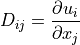
As this is a second order tensor, it can be decomposed into a symmetric and anti-symmetric part, 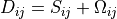 where:
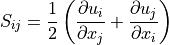
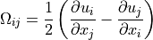
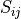 is known as the rate-of-strain tensor and 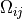 is the vorticity tensor.
The characteristic equation for  is given by
is given by
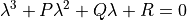
where P, Q and R are the three invariants of the velocity gradient tensor. Using the decomposition into symmetric and anti-symmetric parts, these invariants can be expressed as:
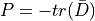

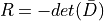
Q criterion¶
The Q criterion proposed by Hunt et al (1988) [HUNT1988] identifies the vortices as flow regions with positive second invariant of $nabla u$. An additional condition is that the pressure in the eddy region should to be lower than the ambient pressure. Chakraborty et al (2005) [CHAKRA2005] quoted “in an incompressible flow Q is a local measure of the excess rotation rate relative to the strain rate”.
In practical terms, the vortex is detected in case of the second invariant  .
.
 criterion¶
criterion¶
Chong et al (1990) [CHONG1990] define a vortex core to be the region where 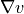 has complex eigenvalues. In order to determine if the eigenvalues are complex, we examine the discriminant of the characteristic equation, considering the flow incompressible (P = 0).
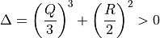
Swirling strength criterion¶
The swirling strength criterion () was developed by Zhou et al (1999) [ZHOU1999]. It defines a vortex core to be the region where has complex eigenvalues. It is based on the idea that the velocity gradient tensor in Cartesian coordinates can be decomposed as:
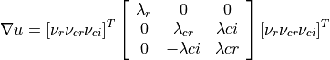
where 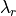 is the real eigenvalue, related to the eigenvector
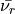, and the complex conjugate pair of complex eigenvalues is
 , related to the eigenvectors
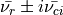. The strength of this swirling motion can
be quantified by , called the local swirling strength of the
vortex. The threshold for is not well-defined, but theoretically
any value greater than zero should be considered a vortex. Experimental results
[ZHOU1999] shows that 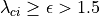 give smoother results.
, related to the eigenvectors
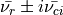. The strength of this swirling motion can
be quantified by , called the local swirling strength of the
vortex. The threshold for is not well-defined, but theoretically
any value greater than zero should be considered a vortex. Experimental results
[ZHOU1999] shows that 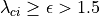 give smoother results.
Localization of the extrema¶
To have smooth results on the swirling strength, we apply a normalization of the field. The swirling strength is divided by the wall-normal profile of its RMS value:
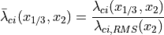
Then the local maxima of the detection can be identified. The normalization is not required for the HIT cases, it is only used when we have an non-homogeneous direction.
In figure Fig. 1 we see the original swirling strength field, where 104 vortices were found, mostly near the wall, where the boundary layer plays an important role in increasing the swirling strengtht. The yellow circles corresponds to the vortices rotating clockwise and the green circles for the counter-clockwise rotation.

In figure Fig. 2 we show the fluctuation of the swirling strength field, by applying the Reynolds decomposition, now with 202 vortices found, minimizing the wall influence over the detection.

We can play with the distance between one detected vortex and another, by increasing the box size of the peak detection. In figure Fig. 3 we set the box size to 12, instead of box size 6 used in figures Fig. 1 and Fig. 2. With this setting we reduce the detected vortices to 154, by removing the overlapping ones.

One interesting fact about the swirling strength (as well the other methods) is that the local maximum values does not always match the center of the vortex. We show in Fig. 4 one example of this mismatch between them.

Fitting of coherent structures¶
Using the peak of maximum swirling strength or identifying the places where the
Q or criterion are higher than 0 gives us a rough estimation of a possible
vortex and its center. But even using a threshold on these methods, the presence
of a real vortex is not always true. To improve this detection we use a Lamb-Oseen
vortex model to be fitted on top of the actual detected peak to check if it is
really a vortex.
The correlation coefficient between the fitted model and the velocity field is calculated according to equation ref{eq:corr} and if it’s higher than 0.75 we can consider it a vortex.
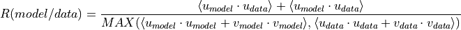
Lamb-Oseen vortex¶
The Lamb-Oseen vortex is a mathematical model for the flow velocity in the
circumferential direction ( ), shown below. It
models a line vortex that decays due to viscosity.
), shown below. It
models a line vortex that decays due to viscosity.
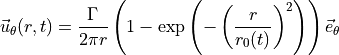
where  is the radius, 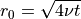 is the core radius of vortex,
is the radius, 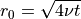 is the core radius of vortex,
 is the viscosity and 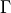 is the circulation contained in the vortex.
is the viscosity and 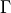 is the circulation contained in the vortex.
In this work we are dealing with a time-independent flow, so we have no decaying due to viscosity. And since the coherent structures are in movement, we add the advective velocity to the Lamb-Oseen vortex model shown below.
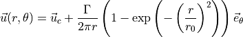
Non-linear least squares¶
Levenberg Marquardt method¶
The Levenberg–Marquardt algorithm, also known as the damped least-squares method, is used to solve non-linear least squares problems. These minimization problems arise especially in least squares curve fitting.
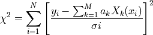
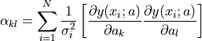
Powell’s dogleg method¶
The Powell’s method is an algorithm for finding a local minimum of a function. This function doesn’t need to be differentiable and no derivatives are taken. It does this using a combination of Newton’s method and the steepest descent method. This is a so-called trust region method. This means that every step moves the current point to within a finite region. This makes the method more stable than Newton’s method.
References¶
- ZHOU1999(1,2)
Zhou J., Adrian R. J., Balachandar S., and Kendall T. M. Mechanisms for generating coherent packets of hairpin vortices in channel flow. J. Fluid Mech., 387:353–396, 1999.
- CHAKRA2005
Chakraborty P., Balachandar S., and Adrian R. J. On the relationships between local vortex identification schemes. J. Fluid Mech., 535:189–214, 2005.
- CHONG1990
Chong M. S., Perry A. E., and Cantwell B. J. A general classification of three-dimensional flow fields. Phys. Fluids, 2:765–777, 1990.
- HUNT1988
Hunt, J. C. R., Wray, A. A. & Moin, P. Eddies, stream, and convergence zones in turbulent flows. Center for Turbulence Research Report, CTR-S88, 1988